01 / KIA Website
01 / KIA Website
UI/UX · Web · App · Visual · 3D
PORTFOLIO
정보 구조, 화면 흐름, 시각 시스템을 연결해
명확한 디지털 경험을 만듭니다.
Designer Profile
사용자 흐름을 설계하고,
브랜드에 맞는 화면 경험으로 완성합니다.
목적을 정의하고, 정보 구조와 화면 흐름을 정리한 뒤
브랜드 톤에 맞는 UI로 완성합니다.
UI/UX
Web Design
App Design
Visual
3D
Interaction Concept
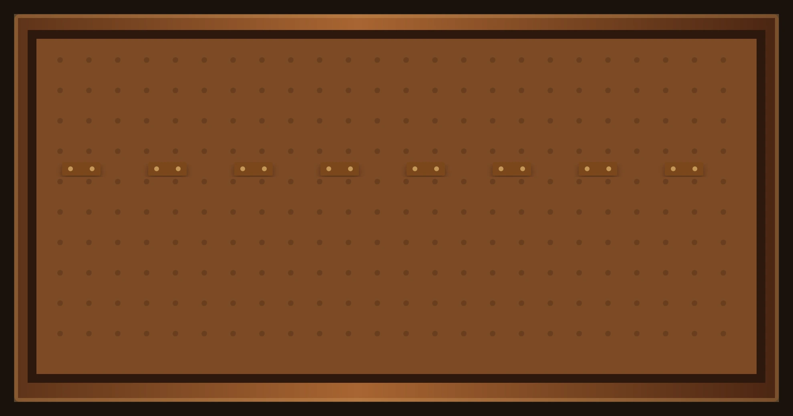
Tools & Skills
프로젝트 단계별로 사용하는 툴과
활용 역량을 정리했습니다.
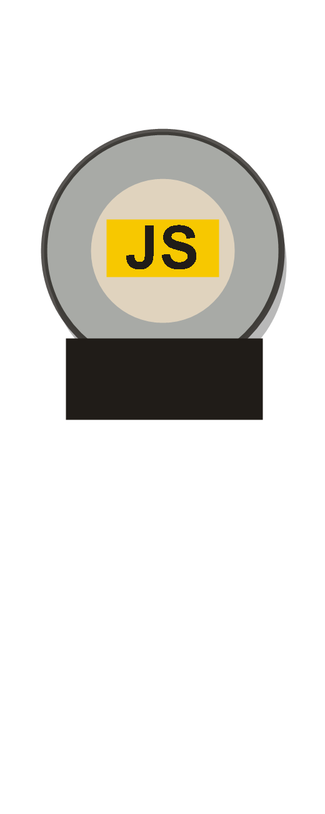
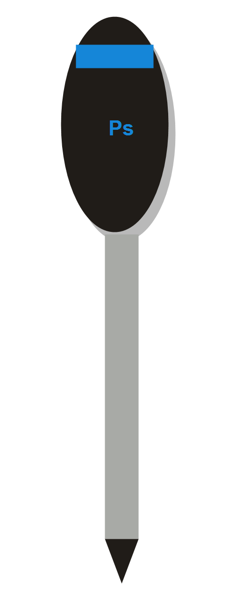
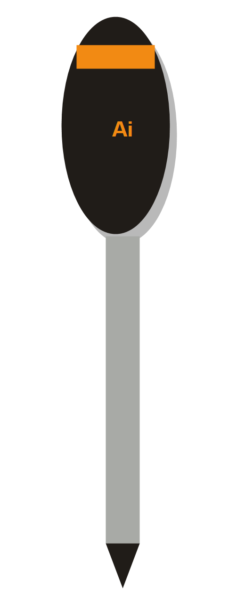
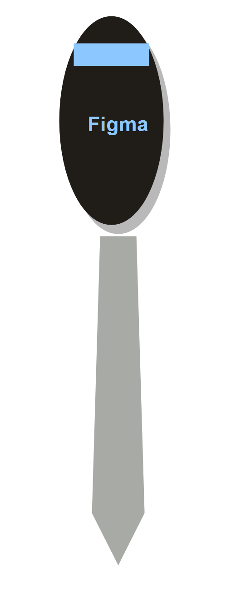
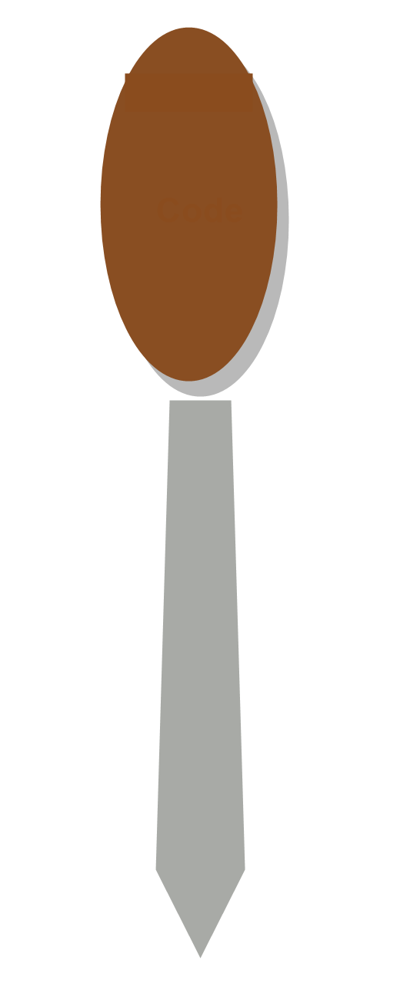
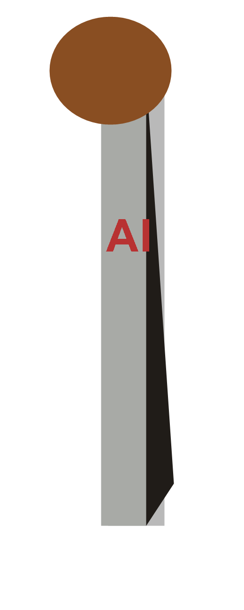
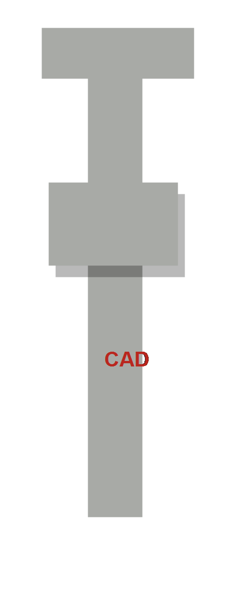
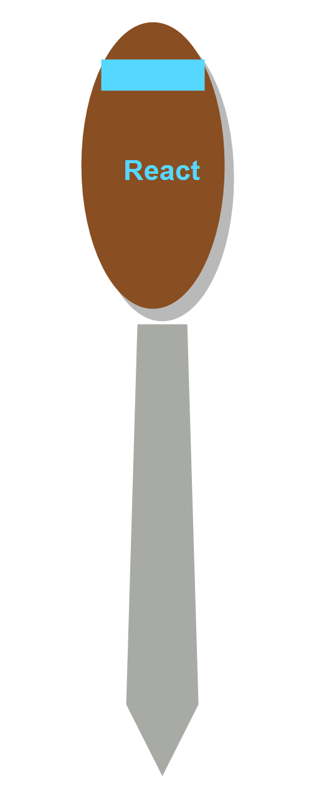
역할, 목표, 결과물을 중심으로
정리한 대표 작업입니다.
01 / KIA Website
 02 / GUNIT App
02 / GUNIT App
 03 / Character & 3D Works
03 / Character & 3D Works
READ · REFINE · CONNECT
세 개의 작업은 하나의 기준 위에서 다듬어지고 연결됩니다.
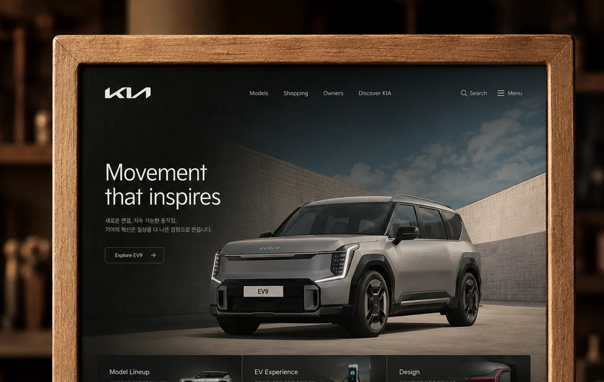
Project 01
KIA Website
Web Design · UI/UX · Brand Experience
- Goal
- 기아의 브랜드 메시지와 차량 정보를 명확한 웹 경험으로 재구성한 UI 디자인입니다.
- Role
- UI Design / Web Layout / Visual Direction
- Output
- Main Page / Detail Section / Responsive Layout
Project 02
GUNIT App
App Design · UX Flow · Service Concept
- Goal
- 에어소프트 팀 매칭과 커뮤니티 활동을 연결하는 앱 서비스 UX를 설계했습니다.
- Role
- UX Structure / App UI / Screen Flow
- Output
- Home / Profile / Community / Event Screens
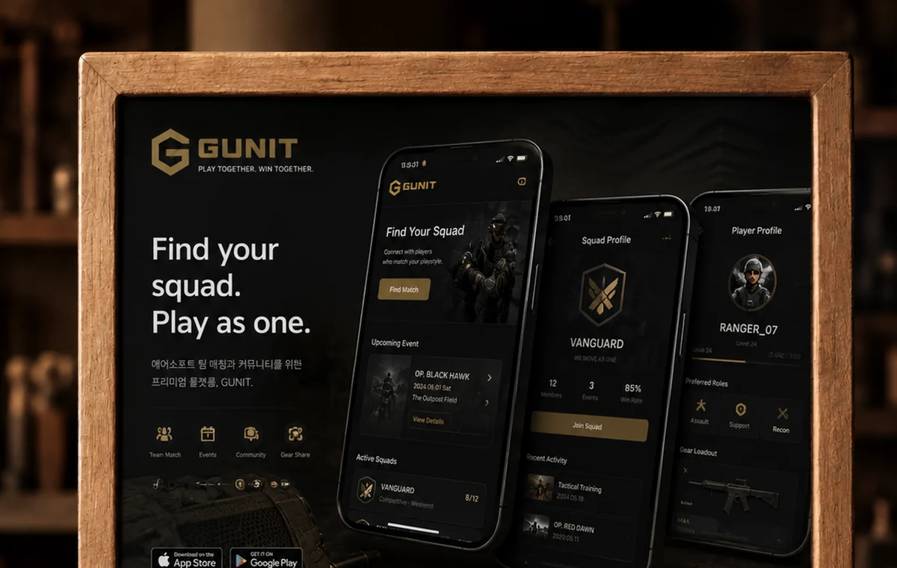
Project 04
Character Design
Character · Visual System · Brand Mood
- Goal
- Milo & Pippa 캐릭터의 성격과 브랜드 무드를 시각 시스템으로 정리했습니다.
- Role
- Concept / Character Style / Application
- Output
- Main Character / Expression / Color Variation
Project 05
3D Modeling
3D Modeling · Material · Rendering
- Goal
- 목재 의자의 형태, 재질, 조명을 정리해 현실감 있는 3D 렌더링으로 완성했습니다.
- Role
- Modeling / Material Setup / Lighting
- Output
- Object Modeling / Detail Rendering / Final Image
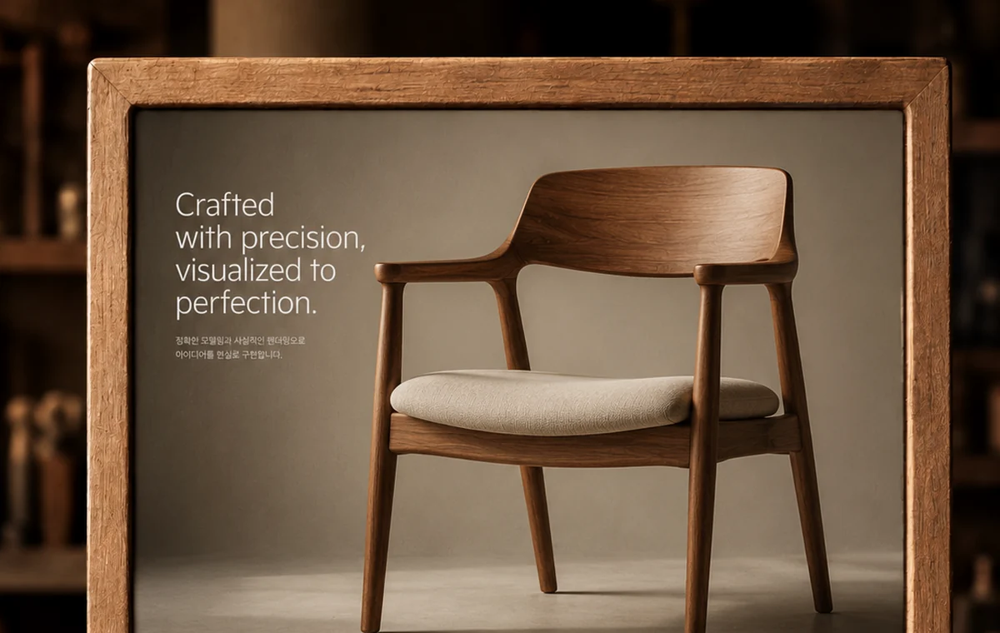